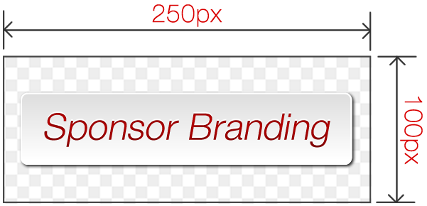

FGL SDK for HTML5:
Official Kiwi.js Plugin
The official FGL Kiwi.js Plugin helps you to use all the FGL SDK features in a Kiwi.js project. This document will show you how to use sponsor branding, cross promotion and in-app purchase "unlock" buttons using Kiwi.js constructs.
Version 1.0.0 2014 November 19
Note
This document offers Kiwi.js Plugin specific implementation details as well as an overview of the methods and features available to the FGL Kiwi.js plugin. You can also refer to the standard FGL HTML5 SDK documentation as it is fully compatible with Kiwi.js, and many of the methods will be exactly the same as those documented here.
Note that most FGL features will only display under certain circumstances. It is up to you to check for these circumstances, and ensure that your game can cope with multiple layouts. FGL provides convenient checks to let you know what features are currently enabled. These are described in the relevant sections.
Displaying Ads
You can call a function to display a takeover ad at any time. The advert will be displayed on top of your game and will display a close button for the user.
We can control which ad networks run on your game, and we are constantly optimizing the inventory on your behalf to get the best possible return. The ads are player-friendly and can be immediately dismissed.
Call the following function when appropriate, for example when the user reaches the main menu, or between levels on your game:
fgl.showAd();
Cross Promotion
To take advantage of our powerful cross-promotion system, you should implement a "More Games" button on your main menu.
When tapped, this button will display an overlay which will cross promote to other games in our network. By doing this, your game will obtain significant promotion at launch, when it needs it most.
To display a 'More Games' button, use the
fgl.showMoreGames method. We suggest you bind this to a game object in your menu:
// Where "state" is the state to which you are adding the button.
// We assume you have created your own "moreGames" texture.
var moreGamesButton = new Kiwi.GameObjects.Sprite(
state, state.textures.moreGames, 310, 312 );
moreGamesButton.input.onUp.add( fgl.showMoreGames, state );
state.addChild( moreGamesButton );
(Continued on next page)
Cross Promotion (cont.)
Not all target platforms allow cross promotion. You must check this when constructing your scene, and only display a
More Games button when it is permitted:
if ( fgl.crossPromotionEnabled ) {
// Cross promotion is enabled
} else {
// Provide fallbacks
}
You can test your implementation by using the Test Session Options on the intro screen of the FGL SDK:

Premium Model
To most effectively monetize your game on the various platforms, we offer a simple set of features to allow us to sell a full or premium version of your game.
The system works by allowing you to check if the game is running in premium or free mode:
if ( fgl.isPremium() ) {
// Allow premium content
}
You should use this feature to restrict content or features when your game is running in free mode. This will help your game to upsell to premium. You do not need to disable/hide ads yourself as the SDK will automatically hide ads for you when the game is running in premium mode.
On many platforms your game will be unlockable to premium by a simple in-app purchase. You should take advantage of this by using the
fgl.fgl.inApp.initiateUnlockFunction method, for example:
state.premiumUnlockButton = new Kiwi.GameObjects.Sprite(
state, state.textures.premiumUnlock, 20, 312 );
state.premiumUnlockButton.input.onUp.add( attemptUnlock, state );
var attemptUnlock = function() {
fgl.inApp.initiateUnlockFunction( unlockSucceeded, unlockFailed );
};
You should provide fallbacks for markets where in-app purchases are not allowed. By using this method we can still sell a premium version of your game on markets which don't support in-app purchases, as well as distributing a free ad-supported version of your game.
(Continued on next page)
Premium Model (cont.)
If you would like to detect whether in-app purchases are allowed:
if ( fgl.unlockEnabled ) {
// In-app unlock is enabled
}
When tapped/clicked, your unlock button will take the player through the in-app purchase and eventually will trigger the callback functions you passed to the
fgl.inApp.initiateUnlockFunction method.
// On Success:
var unlockSuccess = function() {
// Success! Unlock your game's premium content here.
};
// On Failure:
var unlockFailed = function() {
// Make sure premium content is locked here
// Do not notify the user, that is handled by the SDK
};
fgl.inApp.initiateUnlockFunction( unlockSucceeded, unlockFailed );
You can test your implementation by using the Test Session Options on the intro screen of the FGL SDK:
Publisher Branding
To further monetize your game, sometimes we may have the option to sell a "sponsorship branded" version of your game to a publisher, much like on the FGL Game Shop. If you would like your game to be able to make money in this way, then you must implement our simple publisher branding functionality.
You should display the image on your main menu, and in any other menus where it make sense. Publishers will be able to see where their branding will show up in your game before they purchase, so placing the branding somewhere non-prominent such as only in the credits menu may result in fewer sales.
To show publisher branding in your game, call the following method:
game.FGL.addBrandingLogo( state, x, y )
// Add some publisher branding
this.game.FGL.addBrandingLogo( this, 335, 15 );
You must detect whether branding is enabled before attempting to display a branding logo:
if ( fgl.brandingEnabled ) {
// Publisher branding is enabled
}
(Continued on next page)
Publisher Branding (cont.)
When you implement publisher branding, you should see a test branding placeholder. This will help you to properly position the logo on your menu screens.
The image should always be 250px by 100px in size and will have a transparent background:
Example sponsor logo image
You can test your implementation by checking the "Show sponsor branding" option from the Test Session Options on the intro screen of the FGL SDK:
See the core FGL documentation for more information on methods related to publisher branding. You may still choose to call those methods directly, but you will have to jump through many hoops to get the same result: cross-site resource loading security permissions, the specific dimensions of the publisher branding logo, etc. The addBrandingLogo method does all the work for you.
Scoreboards
Our generic leaderboard functions allow you to implement one simple set of leaderboard calls - we can then do all the work to make your HTML5 game use the best leaderboard system for each platform. This gives your game an advantage as many platforms will give additional promotion or exposure to games which integrate with their proprietary systems.
The following functions are available:
// Submit the score in response to a user pressing a submit button:
fgl.submitScore( score );
// Show the scoreboard UI. This happens automatically after submitScore:
fgl.displayScoreboard();
See the FGL HTML5 SDK documentation for further details.
Achievements
Like leaderboards, achievements can help boost the popularity and promotion of your game by allowing our system to tie in to the best solutions for each platform.
The following functions are available:
// Grant a named achievement to the player:
fgl.grantAchievement( name );
// Check if the player has previously been granted an achievement:
boolean fgl.hasAchievement( name );
See the FGL HTML5 SDK documentation for further details.